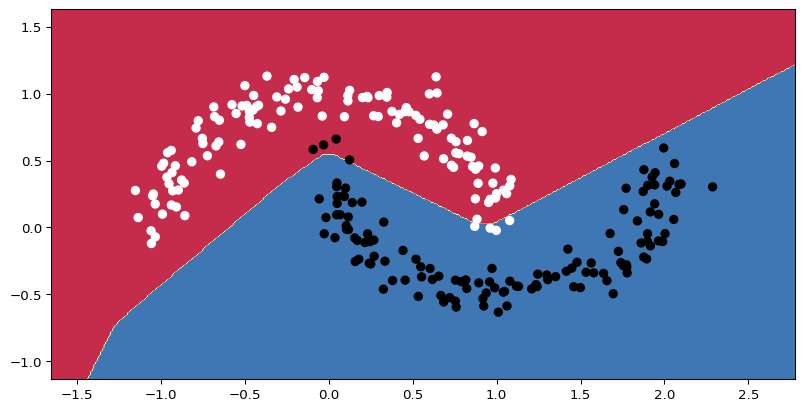

Each hidden unit corresponds to a hyperplane, and each polygon to an activation pattern.
Universal Approximation Thm
\(\exists\) shallow neural network with a single layer of sufficiently many hidden units that can approximate, with arbitrary precision, any continuous function from a compact subset of \(R^{n_{in}}\) to \(R^{n_{out}}\).
Epoch 0 loss is 0.7221612930297852
Epoch 1000 loss is 0.27950406074523926
Epoch 2000 loss is 0.24892622232437134
Epoch 3000 loss is 0.2347331941127777
Epoch 4000 loss is 0.22433272004127502
Epoch 5000 loss is 0.2131991982460022
Epoch 6000 loss is 0.2003837525844574
Epoch 7000 loss is 0.1849856972694397
Epoch 8000 loss is 0.16728699207305908
Epoch 9000 loss is 0.1484847515821457
Epoch 10000 loss is 0.12948602437973022
Epoch 11000 loss is 0.11162294447422028
Epoch 12000 loss is 0.09596933424472809
Epoch 13000 loss is 0.08286705613136292
Epoch 14000 loss is 0.07198813557624817

Another Example
import torch, torch.nn as nnfrom torch.utils.data import TensorDataset, DataLoaderfrom torch.optim.lr_scheduler import StepLR# input size, hidden layer size, output sizeD_i, D_k, D_o =10, 40, 5# create model with two hidden layersmodel = nn.Sequential( nn.Linear(D_i, D_k), nn.ReLU(), nn.Linear(D_k, D_k), nn.ReLU(), nn.Linear(D_k, D_o))# He initialization of weightsdef weights_init(layer_in):ifisinstance(layer_in, nn.Linear): nn.init.kaiming_normal_(layer_in.weight) layer_in.bias.data.fill_(0.0)model.apply(weights_init)# choose least squares loss functioncriterion = nn.MSELoss()# construct SGD optimizer and initialize learning rate and momentumoptimizer = torch.optim.SGD(model.parameters(), lr =0.1, momentum=0.9)# object that decreases learning rate by half every 10 epochsscheduler = StepLR(optimizer, step_size=10, gamma=0.5)# create 100 random data points and store in data loader classx = torch.randn(100, D_i)y = torch.randn(100, D_o)data_loader = DataLoader(TensorDataset(x,y), batch_size=10, shuffle=True)# loop over the dataset 100 timesfor epoch inrange(100): epoch_loss =0.0# loop over batchesfor i, data inenumerate(data_loader):# retrieve inputs and labels for this batch x_batch, y_batch = data# zero the parameter gradients optimizer.zero_grad()# forward pass pred = model(x_batch) loss = criterion(pred, y_batch)# backward pass loss.backward()# SGD update optimizer.step()# update statistics epoch_loss += loss.item()# print errorprint(f'Epoch {epoch:5d}, loss {epoch_loss:.3f}')# tell scheduler to consider updating learning ratescheduler.step()
Epoch 99, loss 2.451
References
Prince, Simon J. D. 2023. Understanding Deep Learning. Cambridge, Massachusetts: The MIT Press.